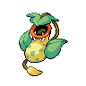
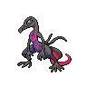
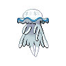
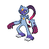
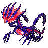

基本規則
單局無限進行，死亡才會結束。
排行榜只比誰活得久。
不會加強自己的招式。
- 「全破」指達成 127 個成就與 21 個稱號。
- 招式池：夥伴可以學「一般系招式」，加上「自身屬性的招式」。
- 屬性只影響你受到的傷害，不會加強自己的招式。受傷倍率：克制 ×1.6、不擅長 ×0.6、免疫 ×0.3；雙屬性相乘，最終限制在 ×0.3 到 ×2.4。 理論值
免疫不是零傷害，仍然吃 ×0.3。
開局與挑夥伴
初始夥伴
開戶時從下列初始夥伴挑一隻。初始夥伴開戶後不能重選，但之後可以免費換成已擁有的其他夥伴，所以不用太糾結，挑看得順眼的就好。
挑夥伴看四件事
- 招式池能學「一般系 8 招」加上「自身屬性的招式」。雙屬性兩邊的招都能學，選擇比較多；各屬性有哪些招見下一節。
- 有沒有範圍招式怪是一波一波圍上來的，光環、環狀爆發、環繞、足跡這類打一圈的招，比單體投射好清怪。
- 受傷倍率屬性只影響你受到的傷害。雙屬性弱點相乘最高 ×2.4，抗性相乘最低 ×0.3；點圖鑑卡片可以直接看每隻的受傷倍率。
- 三圍與星級血量、速度、攻擊與星級都可以在圖鑑排序比較。高星夥伴要靠扭蛋取得。
各屬性招式池
每隻夥伴都能學一般系招式，再加上自身屬性的招式。下表列出每個屬性的招式、類型，以及進化需要的能力卡。完整說明見招式表。
招式類型
同樣是攻擊，打法差很多。挑主力招式時，先看它屬於哪一類。
選卡與進化
理論值升級卡片的推薦優先序（看到時先拿哪張，不是固定的時間流程）：
- 先湊出一個主力範圍招式光環、環狀爆發、環繞、足跡等打一圈的招。走流派時改拿流派核心招，例如毒系先拿毒菱足跡。
- 主力範圍招式升到 Lv5再拿 1 張該招指定的能力卡進化（每招要的卡不同，見下表）。
- 減傷卡（Armor）疊到 70%先把受傷壓下來。
- 攻擊卡（Power）
- 冷卻卡（Reflexes）
- 最大血卡（Vigor）與回血卡（Synthesis）沒有上限，可以一直疊。
進化需要哪張能力卡
招式升到 Lv5 後，再拿到指定的能力卡就會進化。增益招式不能進化。
格子與重抽
- 招式最多 4 格，只有作用中的那一格會出招。
- 新招式卡只會在格子未滿 4 格時出現。
- 重抽次數 = 1 + 已擊敗的 Boss 數。
- 增益招式（Harden、Aqua Ring 等）建議等拿到羈絆後，再併入主攻格。
羈絆
- 打贏裂隙就能得到羈絆。
- 同一格最多可以併入 4 招同時發動。
- 例如同一格放 Power Whip（藤鞭進化）＋ Toxic（毒菱足跡）＋ Harden（變硬）＋ Aqua Ring（水流環）。
時間線與難度
理論值裂隙機率階梯
每次落空 +20%。Boss 在場時暫停判定，所以實際時間可能往後延。
| 時間 | 事件 |
|---|---|
| 1:15 起 | 裂隙判定開始，第一次約在 1:45，之後每 30 秒一次。起始機率 20%，每次落空 +20%，第 5 次（約 3:45）必出。Boss 在場時暫停判定。 |
| 傳說血量 | 3200 + 9 × 秒數。越早進入越好。 |
| 3 / 6 / 9 / 12 / 15 分 | Boss 出現。15 分鐘之後不再排 Boss。 |
| 約 9 分 | 難度牆：場上總血量約 30 萬。 |
戰術
- 治療者
- 護盾者
- 召喚者
傷害 ×2、冷卻 −40%。建議留給打 Boss 時使用。
每秒回復 14% 血量。
- 自爆怪要趁距離遠時先殺；引信燒到一半被殺，仍然會爆炸。
- 地面出現預警圈時要立刻離開。
- 陷阱別踩。
- 中後期迷路的寶可夢救不回來時就放棄，別硬救。
- 天氣也會套用在你受到的傷害上。
持有物
每秒回復 1.5% 血量。 理論值
減傷 +20%。
攻擊 ×1.3；每次出招扣自身 1% 血量，但足跡與軌道類招式不扣血，所以主力是足跡或軌道類招式時沒有代價（例如毒菱足跡）。
會鎖招。
永久升級
- 每隻夥伴各自有一套永久升級，不互相共用。
- 先買到約 1000 金幣的份量就停手：金幣加成 1–3、血量 1–3、攻擊 1–2、拾取 1–2。確定主力之後再加。
- 血量
- 攻擊
- 冷卻
- 減傷
帳號、任務與扭蛋
×10 抽的第 10 抽保底 4★ 以上
70 抽保底 5★
- 每日任務一定要在馬德里時間換日前領取，過了不會補發。換算成台北時間，換日約在早上 6 點（馬德里夏令）或 7 點（冬令）。
- 扭蛋只用 ×10 抽。第 10 抽保底 4★ 以上。
- 70 抽保底 5★。
- 關都卡池的毒系夥伴最多，組毒系隊可以優先考慮。
裂隙 18 競技場剋制表
每張卡左邊是競技場屬性，右邊是建議用來打的攻擊屬性，下方是需要的天氣或條件。
- 一般→格鬥
- 火→岩石
- 水→電雨天
- 草→毒
- 電→水雨天
- 冰→岩石
- 格鬥→妖精
- 毒→地面
- 地面→冰
- 飛行→岩石
- 超能力→惡
- 蟲→火只有蓋諾賽克特
- 岩石→鋼
- 幽靈→幽靈霧天
- 龍→龍
- 惡→妖精
- 鋼→地面
- 妖精→鋼
地形與天氣：屬性的隱藏特性
理論值傳聞是真的：水系踩進水裡不會減速。每張地圖都有一種液體地形，對應屬性的夥伴完全不受影響。雙屬性只要其中一個符合就算。
主線的幽暗森林、水晶洞窟，以及水、妖精競技場。
草、地面、蟲競技場。
每 0.5 秒扣 3%（至少 5 點），還會清掉受傷後的無敵時間。主線灰燼火山，以及火、龍競技場。
每 0.5 秒扣 1.75%（至少 3 點）。毒競技場。
每 0.7 秒扣 2.25%（至少 4 點）。電競技場。
不減速，最高速度還略快，但轉向有慣性、很難急停。冰競技場。
- 飛行系夥伴沒有浮空特權。你操作的夥伴照樣吃地形效果；只有「會飄的敵人」和傳說寶可夢不受地形影響。
- 敵人也吃同一套規則。地面敵人在水中 ×0.55、沼澤 ×0.45，同屬性一樣免疫。會扣血的液體敵人尋路時會繞開。
- 主線地圖每 4 分鐘輪替：幽暗森林（水）→ 水晶洞窟（水）→ 灰燼火山（岩漿）→ 回到森林。火系在火山區可以把岩漿當成安全區，地面敵人得繞路。
- 競技場中一般、格鬥、飛行、超能力、岩石、幽靈、惡、鋼沒有液體池。
天氣
開局 2 分鐘後，每 60 秒有 18% 機率起天氣，持續約 55–75 秒。倍率看攻擊的屬性：你的招式看招式屬性，你受到的傷害看敵人的第一屬性。
火 ×1.5、水 ×0.5。
水 ×1.5、電 ×1.2、火 ×0.5。
幽靈、妖精、超能力 ×1.3。
這三系 ×1.3。其他屬性每 2 秒扣 1.2% 最大血量（不會扣到死）。
冰 ×1.5。其他屬性每 2 秒扣 1.2% 最大血量，移速 −10%。
- 沙暴與雪天對敵人也有效：非對應屬性的敵人每 2 秒扣 2% 最大血量 +1（Boss 除外），雪天一樣減速。
- 各地圖常見天氣：森林以雨為主（約 40%），其次霧、晴；洞窟以霧（約 40%）和雪（約 33%）為主；火山以晴、沙暴各約 43% 為主。
- 競技場內不會隨機起天氣，但火、水、電、冰、地面、岩石、幽靈競技場有固定天氣（見上方剋制表）。
流派範例
毒系：用百分比傷害吃掉高血量
理論值中毒是毒系流派的主要傷害來源。傷害以最大血量的百分比計算，所以敵人血量再怎麼成長，中毒傷害都不會打折。
秒數只算百分比部分（每秒約 2% × 層數），沒有計入每跳 +1 的固定傷害，也沒算其他招式，實際只會更快。
| 層數 | 每秒約（佔最大血量） |
|---|---|
| 1 層 | 2% |
| 2 層 | 4% |
| 3 層 | 6% |
| 4 層 | 8% |
| 5 層 | 10% |
| 6 層 | 12% |
| 7 層 | 14% |
| 8 層（上限） | 16% |
- 毒層上限 8 層，約每秒 16% 最大血量。
- Boss 與裂隙傳說不免疫中毒。
毒系招式（共 4 招）
走過的路會留下毒池，1 層。
最優先每次爆炸 2 層。
單體攻擊、出手快，1 層。
投射攻擊，1 層。
毒系推薦夥伴：主力
點卡片可以到圖鑑查看完整的招式池與受傷倍率。★ 是遊戲內星級，不是推薦評分。


其他好拿的毒系



高星夥伴



